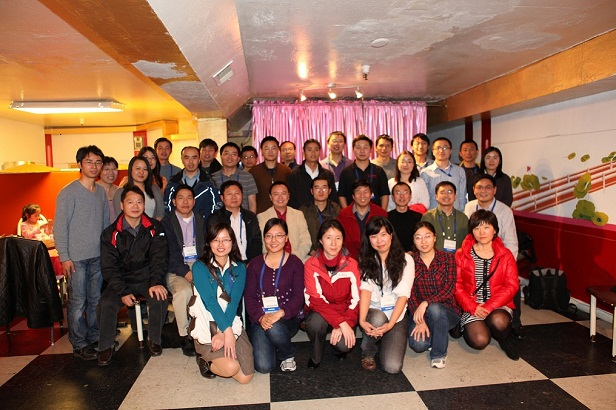

Advancing water sciences, empowering young scholars.
CYWater is a non-profit international association advancing water sciences education, research, and professional development through scientific exchange, publications, and conferences.
CYWater's mission is to advance water sciences education, research, and professional development by empowering young, early-career, and other professionals through scientific exchange, publications, and conferences for the public benefit.
The Association was founded in 2011 and is incorporated as a not-for-profit corporation in the State of Illinois. It operates as a virtual organization with a worldwide community of people interested in water sciences.
What we value
Open participation
Membership is open to individuals who support the Association's mission and are interested in water sciences.
Scientific exchange
Conferences, publications, workshops, and professional exchange connect water-science communities worldwide.
Public benefit
The Association's scientific, charitable, and educational work is conducted for public benefit.
Accountable governance
A Board of Directors oversees strategy, finances, committees, legal compliance, and the Association's mission.

Milestones
CYWater was founded as an international water-science community.
The Young Scientist Best Paper Award was established.
The first Annual Meeting was held in Beijing.
The Annual Meeting moved online and reached participants across multiple continents.
The next Annual Meeting will take place in Nanjing, China.